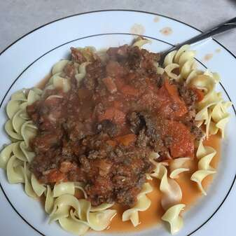

Bolognese Recipe
Back to home

Delicious looking home-made bolognese
Ingredients
- 1 Pound lean group beef
- 3 ounces bacon, chopped
- 1 cup chopped onion
- 1/2 cup sliced celery
- 1/2 cup chopped carrots
- 1/2 cup beef broth
- 1 can crushed tomatoes
- 3/4 cup whole milk
- Spaghetti Pasta
Steps
- Brown beef, bacon, onion, celery and carrots in a large saucepan over medium-high heat until browned and crisp, about 10 minutes.
- Add broth; simmer until evaporated, scraping browned bits from bottom of pan.
- Stir in tomatoes and milk. Simmer over medium-low heat until sauce is thickened, about 15 minutes. Serve over pasta.
Back to home